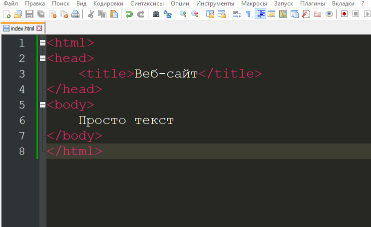
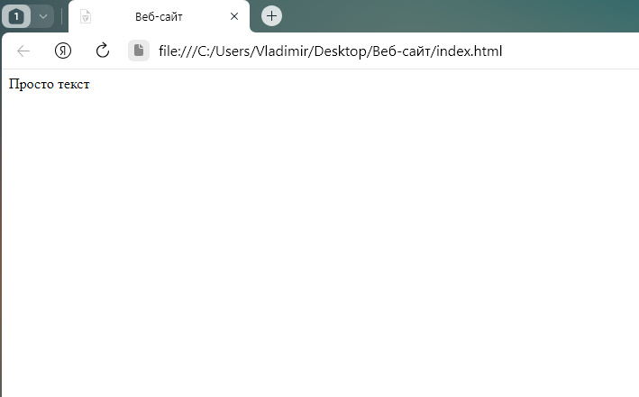
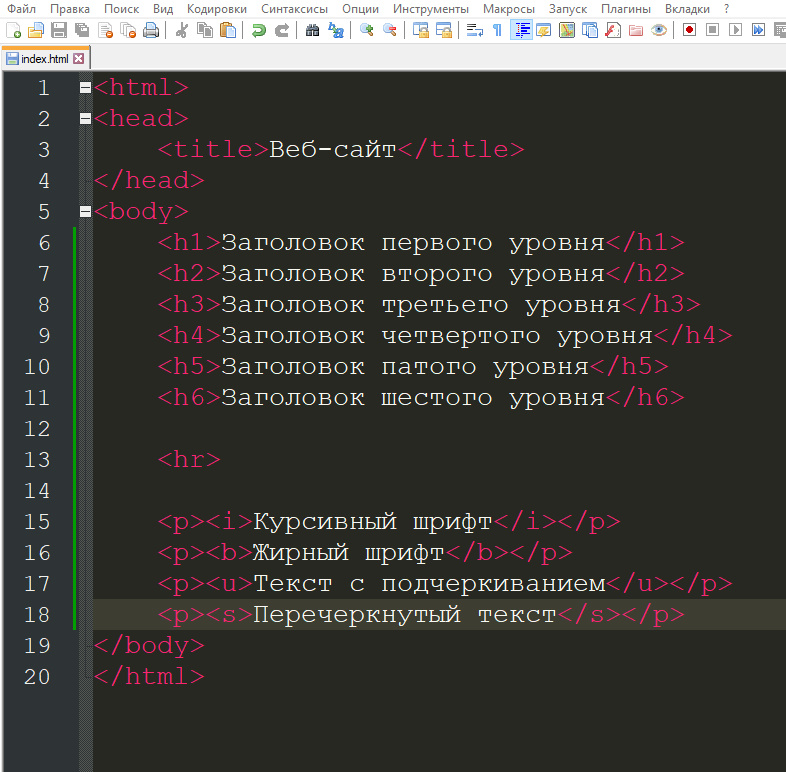
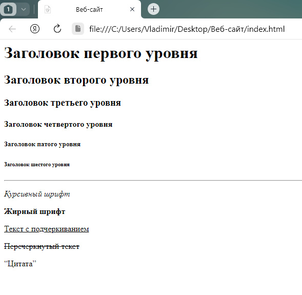

HTML - для начинающих

Первым делом создадим на рабочем столе папку и дадим ей название - "Веб-сайт".
В этой папке нам нужно создать текстовый документ, назовем его index, и тут важный момент, после названия у нас идет расширение файла, сейчас оно .txt, нужно поменять его на .html
Теперь мы можем кликнуть два раза по мему, чтобы он открылся в браузере в виде сайта, но пока там будет просто белый экран
Теперь откроем этот файл в любом текстовом редакторе, допустим это будет Notepad++ и пропишем там самую простую структуру любого сайта
В данном коде мы написали основные мета-теги HTML, без которых бы сайт просто не работал, также между двух открывающих и заркывающих тегов title написали название нашего сайта, которое потом будет отображаться на его вкладке. Также мы написали простой текст между открывающимся и закрывающимся тегом body, давайте посмотрим как это все работает
Пока у нас просто небольшого размера текст и сверху мы можем видеть название нашего сайта, которое мы прописали между открывающимся и закрывающимся тегом title, давайте попробуем использовать другие теги html
Посмотрим как это все будет выглядеть
Тут мы использовали теги от h1 до h6, которые обозначают заголовок и увеличивают текст от большего к меньшему, добавили горизонтальную лению с помощью тега hr, которая разделает элементы сайта и после неё добавили разнообразный текст, с помощью тегов форматирования текста, среди которых, i, b, u ,s